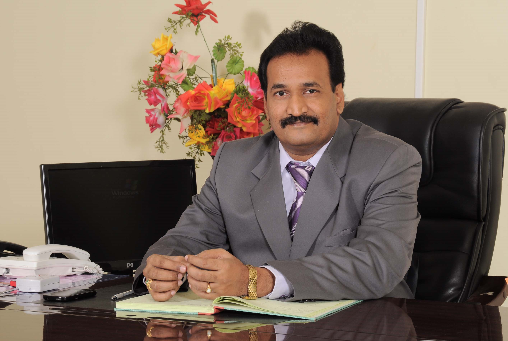

|  |
| Dr.P.Bala Krishna Prasad is the Principal of esteemed Eluru College of Engineering & Technology, ELURU. He received B.Tech (CSE) from IETE: New Delhi and M.Tech(CSE) from Andhra University in the year 2000. He obtained Ph.D in Computer Science & Engineering from Acharya Nagarjuna University GUNTUR in the year 2007.He has a rich experience of 21 years which includes Teaching, Research and Administration. He is a multi-tasking personality and served various designations ranging from Associate professor, Professor, Academic director and Principal for various reputed Engineering Colleges. He has published several papers in National and International Journals which include, Congestion controlling for streaming media Through Buffer management and Jitter control, Accurate estimation of available bandwidth in the channel through sooppd technique, ISSN: 0974-3596,Estimation of Available Bandwidth through Sooppd Technique To Improve Streaming Video Quality, BAND WIDTH ESTIMATION THROUGH STREAM OF OCTAL PACKET PAIRS, etc. He taught more than 20 subjects for engineering students .He is a renowned author for 6 books in the field of Computer Science and Engineering, relating to operating systems, computer graphics, etc. Besides this, he is a life member of several professional societies ISTE, IEEE, IETE. He is a specialist who can work individually or as a team member. He has great skill in organizing things right from the scratch. He will definitely be an asset to any institution or organization in which he is employed. He is a visionary leader to manage educational transformation in the institution; He has the ability to make a real difference to student’s lives in a totally innovative education setting. Dr.P.Bala Krishna Prasad took over as the Principal of Eluru College of Engineering& Technology on June 2012.He strongly believes in “Success comes to those, who work hard. And it stays with those, who don’t rest on the laurels of the past”. |